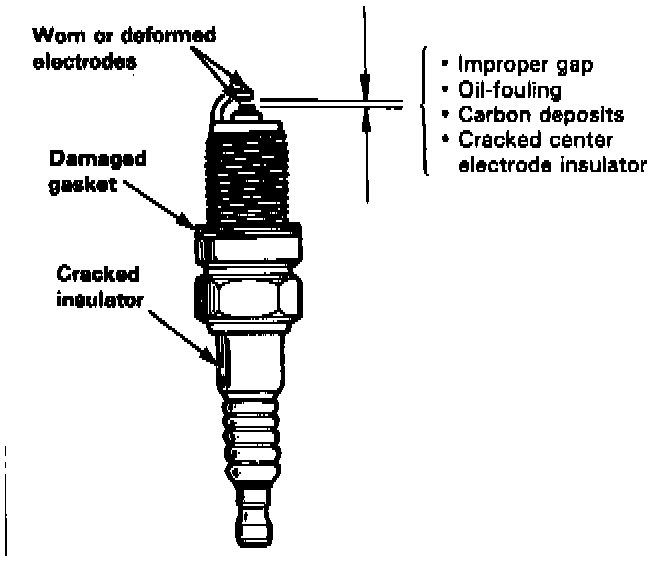
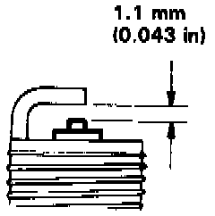

Spark Plug: Testing and Inspection
INSPECTION
1. Inspect the electrodes and ceramic insulator for:
- Burned or worn electrodes may be caused by:
- Advanced ignition timing
- Loose spark plug
- Plug heat range too hot
- Insufficient cooling
- Fouled plug may be caused by:
- Retarded ignition timing
- Oil in combustion chamber
- Incorrect spark plug gap
- Plug heat range too cold
- Excessive idling/low speed running
- Clogged air cleaner element
- Deteriorated ignition coil or ignition wires

2. Adjust the gap with a suitable gapping tool.
Electrode Gap: 1.1 mm (0.043 in)
3. Replace the plug if the center electrode is rounded as shown.
NOTE: Do not use spark plugs other than those listed. These plugs are a new type (ISO standard).
For all normal driving:
BKR5E-N11 (NGK)
K16PR-L11 (Nippondenso)
For hot climates or continuous high speed driving:
BKR6E-N11 (NGK)
K2OPR-L11 (Nippondenso)
4. Screw the plugs into the cylinder head finger-tight, then torque them to 18 Nm (13 ft lb).
NOTE: Apply a small quantity of anti-seize compound to the plug threads before installing.